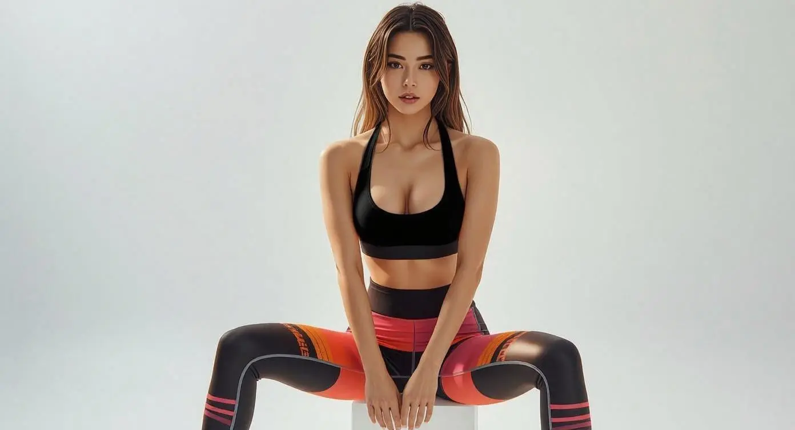
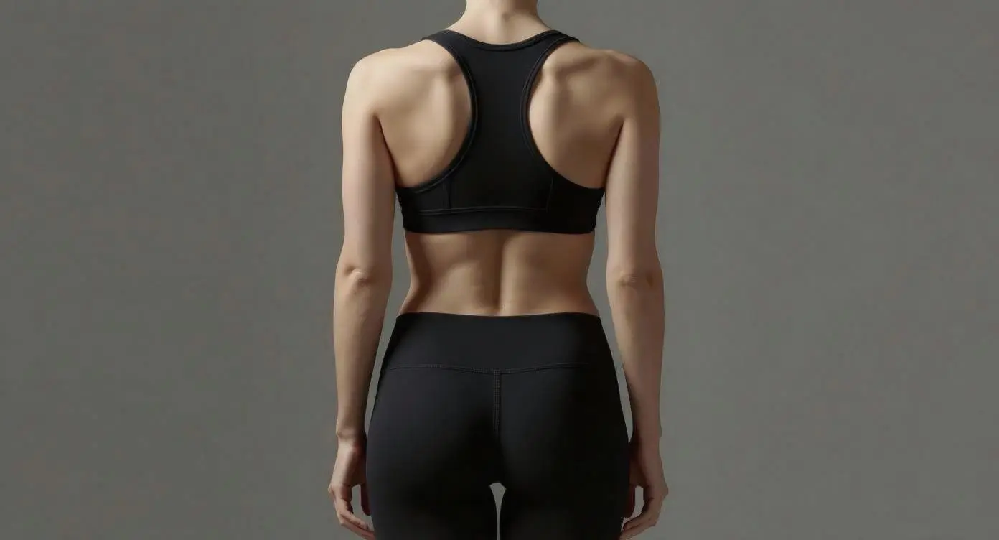

Refined Beauty,
Naturally
Expert surgical care in breast augmentation and body contouring. Personalised results designed to enhance your natural proportions.
Schedule ConsultationOur Services

Breast Augmentation
Enhance your silhouette with customised implant selection designed specifically for your body proportions and aesthetic goals.
- Customised implant selection
- Natural-looking outcomes
- Balanced proportions

Body Contouring
Refine your silhouette through tummy tucks and strategic contouring procedures tailored to your unique body shape.
- Flatter abdominal profile
- Improved body contour
- Personalised approach
Other Services
In addition to breast and body procedures, Dr Agnes Yeo provides a comprehensive range of reconstructive and facial aesthetic treatments — each tailored to your individual needs with a focus on natural, refined outcomes.
View All ServicesAbout Dr Agnes Yeo
Specialist in aesthetic and reconstructive surgery focusing on natural results.
MRCS (Edinburgh)
Member of the Royal College of Surgeons (UK)
MBBS (IMU)
International Medical University
Plastic Surgery (USM)
Master of Plastic Surgery
MSPRS & MMA
Professional Memberships
Why Choose Dr Agnes Yeo
Expertise
Specialised training and years of experience in cosmetic and reconstructive surgery.
Personalised Care
Every consultation is tailored to understand your unique goals and expectations.
Safety First
Highest standards of surgical care, patient safety, and realistic outcome expectations.
Natural Results
Focused on enhancement that looks natural and complements your unique features.
Patient Support
Comprehensive aftercare and ongoing support throughout your recovery journey.
Modern Techniques
Latest advancements in surgical techniques for optimal results and minimal downtime.
Ready to Begin Your Journey?
Schedule a consultation to explore your options.
WhatsApp